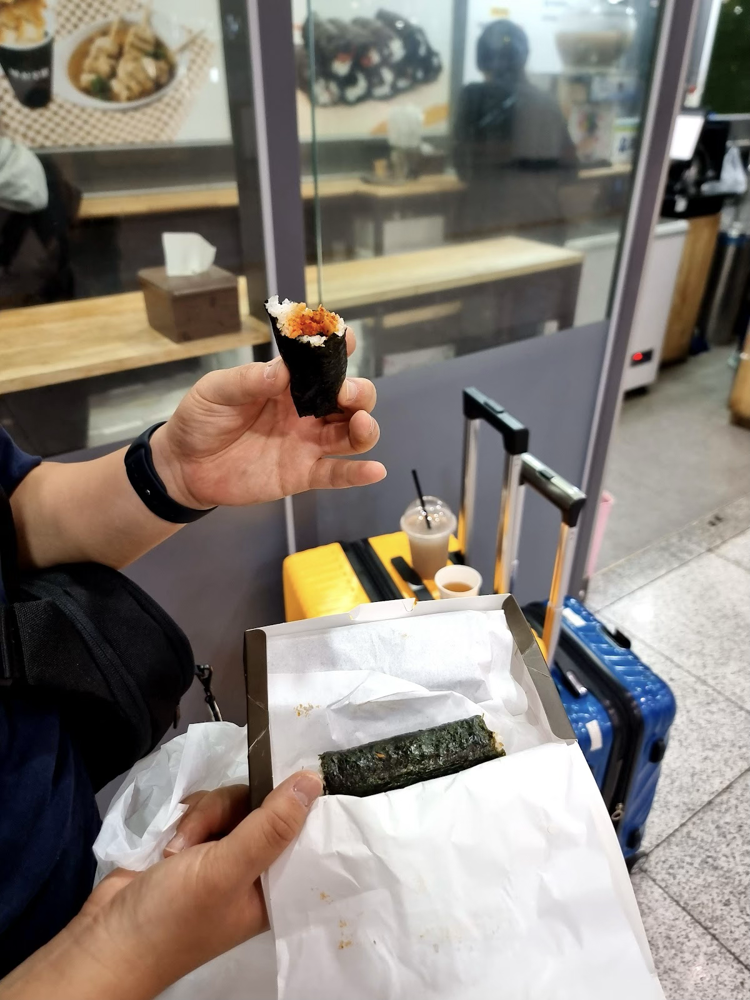
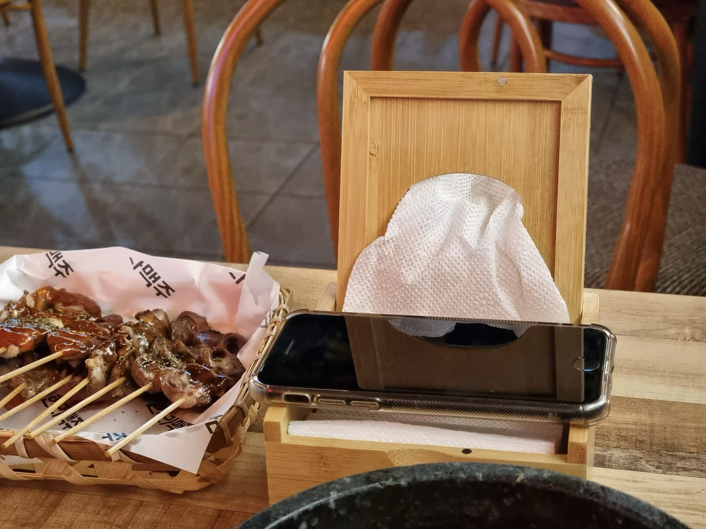
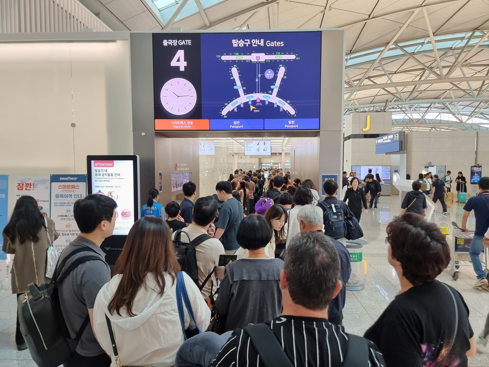
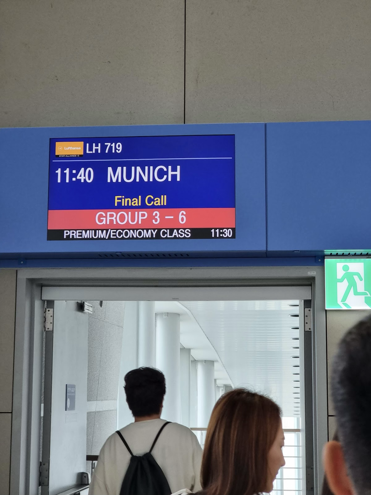
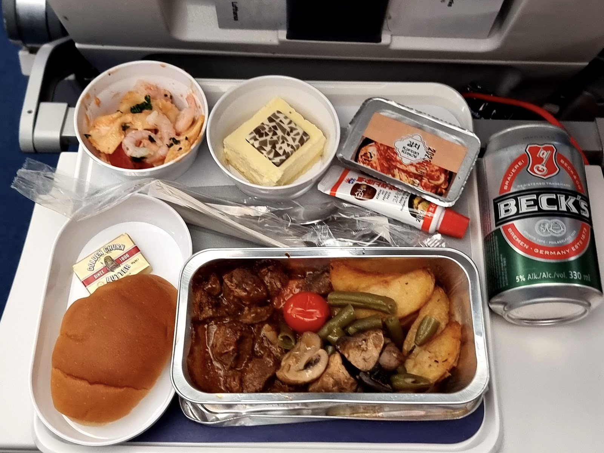
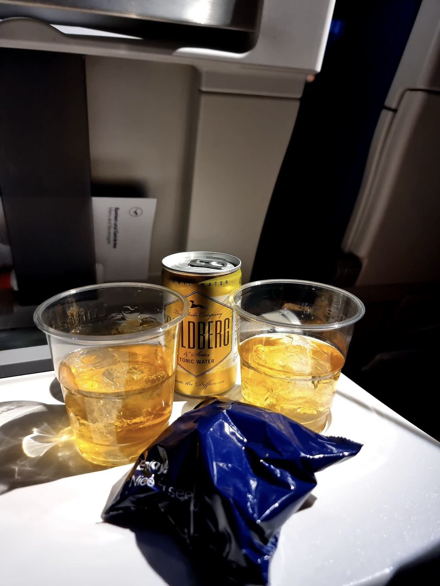
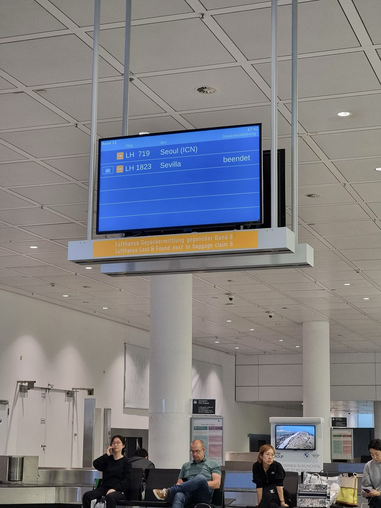
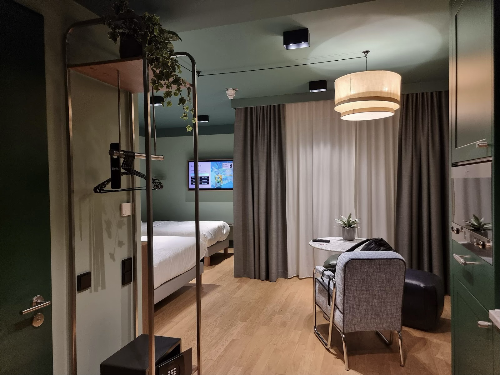
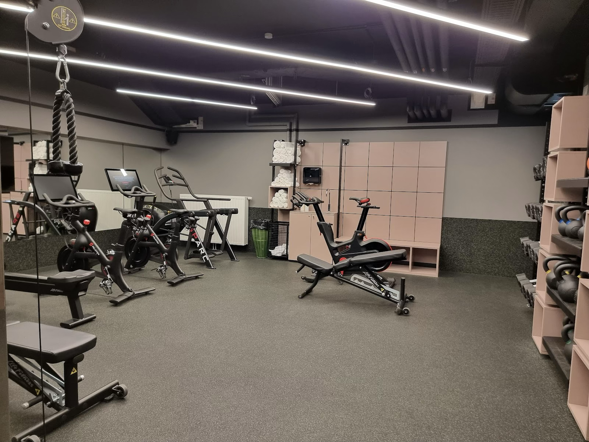
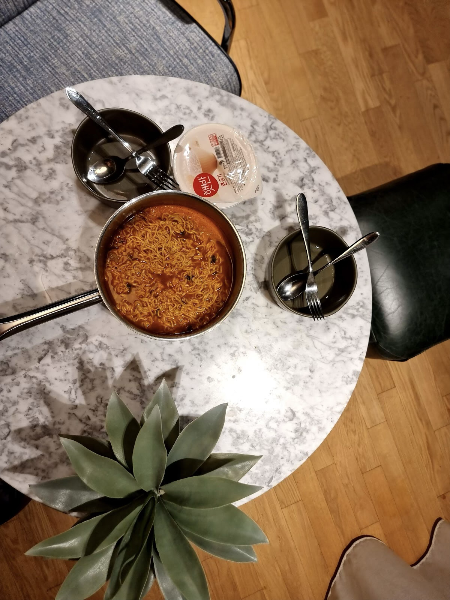

우리는 대전에서 일을 한다. 출국 비행기가 인천에서 수요일 오전 11시 40분에 떴기 때문에, 당일에 대전을 출발해 비행기를 타러 가기는 어려울 것 같아 전날 미리 올라가서 공항 근처에서 하루 잠을 자기로 했다. 운서역 근처의 적당한 숙소와 21시 56분에 서울역으로 출발하는 기차를 잡았다. 일을 빨리 끝내면 기차 시간까지 아주 여유로울 것처럼 보이지만, 당시에 우리는 화/목 20시에 테니스 레슨을 받고 있었다. 짐은 미리 싸 놓는다고 해도, 일을 끝내고, 저녁을 먹고, 테니스를 치고, 씻고 역으로 가야 하는 빡빡한 일정이 우리를 기다리고 있었다.
16시에 H는 랩 세미나 발표를 했고, 끝나자마자 내가 H를 픽업해서 집으로 갔다. H는 냉동짬뽕을 녹여서 저녁을 먹었고, 나는 점심을 늦게 먹어서 저녁을 걸렀다. 마지막 짐까지 싸서 문 앞에 대기시켜 놓고 테니스를 치러 갔다. 테니스는 한 번 레슨을 할 때마다 20분 레슨 + 20분 볼 머신 사용 시간을 주는데, 이 날은 시간이 너무 없어서 볼 머신은커녕 세수도 못 하고 레슨이 끝나자마자 바로 집으로 가야 했다. 집에 가자마자 씻고 짐을 끌고 나와서 택시를 불렀는데, 택시가 안 잡힐까봐 긴장이 돼서 씻고 나서도 땀이 계속 났다. 다행히 택시는 바로 잡혔고, 대전역까지 가는 길도 막히지 않아서 역에 도착하자 기차 시간은 25분 정도가 남아 있었다. 나는 그제서야 배가 고파져서 핫도그를 사 먹고 H는 김밥과 식혜를 먹었다. 김밥은 무말랭이 하나 들어간 단출한 구색이었고 식혜도 맛은 없었다.

서울역 > 완행 공항철도를 타고 운서역으로 이동했다. 대전에서 서울역 가는 동안, 서울역에서 운서역으로 가는 동안 H의 핸드폰으로 데이터를 다 까먹으며 스우파2를 본방사수했다. 운서역에서 우리가 하루 묵은 호텔은 호텔투어라는 곳이었는데, 역에서 걸어갈 수 있을 만큼 가까웠다. 예전에 묵었던 골든튤립이라는 호텔과 로비를 공유하고 있었는데 왜 두 호텔이 별개로 운영되고 있는지 모르겠다고 생각했다. 룸 컨디션은 그냥 평범한 정도. 어차피 하루 잠만 자고 갈 건데 좋은 컨디션을 찾을 이유가 없었다.
방에 들어가자마자 일단 캐리어를 열고, 둘 다 수하물로 부쳐 버리기 위해 짐을 나눠 담고 전자기기를 뺐다. 가벼운 차림으로 맥주를 한 잔 하러 호텔 바로 옆에 붙어 있는 한라맥주로 갔다. 여기서도 냅킨 통에 휴대폰을 올려놓고 스우파2를 봤다. 생맥주부터 때리면서 휴가 시작을 자축하고, 짜파게티와 라면과 염통꼬치를 줄줄이 먹었다. 휴가에 돌입하기 위한 첫 단계를 무사히 통과했고, 이제 걱정 없이 놀 일만 남았으니 먹을 게 잘도 들어갔다. 옆 테이블에는 사람이 대여섯 명 있었는데, 상에 먹을 건 잔뜩 올라와 있는데도 조용해서 이상하다고 생각하던 와중 한 명이 수화를 하는 걸 봤다. 잠시 지켜보니 그 사람뿐 아니라 모든 사람들이 농인이었다. 능숙하게 수화를 사용하는 모습이 신기했지만, 빤히 쳐다보면 실례일 것 같아 잠깐만 보고 그만두었다.

다음 날 비행기를 타려면 09시에는 일어나야 했기 때문에, 맥주를 적당히 마시고 숙소로 돌아왔다. 취하지는 않았지만 배가 너무 불러서 새벽 3시까지 잠을 못 자다가 겨우 잠에 들었다.
체크인은 전날 점심께에 미리 해 두었기 때문에 출국장 들어가기 전에는 짐만 부치면 되었다. 계획대로 09시에 일어나서 씻고, 짐을 챙겨서 공항으로 향했다. 수하물을 부치고 출국장에 들어가려 하는데 사람이 정말 많았다. 황금연휴를 앞두고 사람들 생각이 다 똑같은 모양이다. 조상님들 우리나라에 불효자녀들이 이렇게 많습니다.

스타벅스에서 모닝커피 한 잔씩 들어주고, 면세품을 받고, H가 발꿈치 뒤에 붙일 반창고도 샀다. 몰타에서 스쿠버 다이빙을 할 계획이었는데 다이빙 부츠를 신을 때마다 H는 발뒤꿈치가 쓸려서 아프다고 했다. 분명 시간 여유가 조금은 있었는데, 이것저것 하다 보니 탑승 시간이 코앞까지 다가와 있었다. 우리는 결국 last call 이 뜨고서야 비행기에 탑승했다. 거의 문 닫고 들어갔다고 봐도 될 것이다.

비행기 좌석에 앉아서 안내문을 보던 H는 뜬금없이 기내 와이파이 바우처를 샀다. 25유로였나, 결코 싼 가격은 아니었는데 무려 ‘프리미엄’ 이 붙어 있길래 궁금해서 사 봤다고 한다. 바우처 하나로 여러 기계가 쓸 수 있긴 했는데, 한 번에 한 대만 연결할 수 있어서 우리가 같이 쓰려면 돌려가며 써야 했다. 프리미엄이라는 거창한 이름을 달고 있는 주제에 인터넷 속도는 산골짜기 3G 수준으로 느렸기 때문에 겨우 텍스트나 보낼 수 있을 정도였다. 나는 한 번 써보고 그 속도에 감명받아 사용을 포기했다.


탄 지 얼마 안 돼서 기내식이 나왔다. 치킨과 소고기를 하나씩 시켜서 둘이 나눠 가며 맛있게 먹었다. 맥주도 먹고 샴페인도 마셨다. 비행기 안에서는 거의 먹고 자는 일밖에 안 해서 기억이 거의 없다. H의 와이파이 바우처로 구글 맵 오프라인 다운로드를 몇 번은 시도했지만, 속도가 너무 안 나와서 결국 포기했다. 자다가 일어나서 위스키를 마시면서 오델로와 스도쿠 게임도 조금 했지만, 금방 취기가 올라와서 또 다시 잤다. H는 교통수단 안에서 잠을 잘 자지 못한다. 내가 자는 동안 H는 심심함을 이기지 못하고 내 크레마 모티프를 가져다가 책을 한 권 다 읽었다. 평소에는 책에 손도 안 대는데 얼마나 심심했으면… 심지어 꽤 몰입해서 읽었는지 내가 자다 깨서 보니 울고 있었다.

그리고 뮌헨 도착. 2018년에 학회 참석차 독일에 왔을 때 잠깐 뮌헨에 놀러 왔었는데, 그 날 이후로 처음이니까 거의 5년 만이었다. 짐을 찾고, S-bahn, U-bahn 을 갈아타며 숙소로 향했다. 우리가… 아니, H가 잡은 숙소는 Schwan Locke 라는 곳이었는데, 옥토버페스트가 열리는 Theresienwiese 공원 바로 옆에 있었다. 도보 5분이면 충분한 거리라서 쉽게 갈 거라고 생각했지만, 이미 옥토버페스트 기간이었기에 Theresienwiese 역 안에서부터 인원통제가 이루어지고 있었고, 지상에서도 우리 마음대로 움직일 수 있는 게 아니라 가벽이 세워진 길을 따라 이동해야 했다. 직행했으면 금방 갔을 숙소였는데 꽤나 돌아서 갔다. 그나마 공원 옆에 큰 교회가 있어서 방향은 쉽게 잡았다.
그래서 겨우 도착한 Schwan Locke. 일층의 로비에서 체크인을 하고 방으로 올라갔다. 로비와 객실이 조금 복잡한 구조로 분리되어 있어서 중간에 살짝 헤맸다. 리셉션의 직원은 영어를 잘 했고 친절했다.


옥토버페스트는 독일뿐 아니라 세계인의 축제에 가깝기 때문에, 축제 기간이 임박하면 뮌헨 숙소들의 가격은 천정부지로 올라간다. Schwan Locke처럼 위치가 가깝다면 말할 것도 없다. 우리가 도착한 당일 기준으로 방 가격이 1박에 80만원에 육박했고, 그마저도 매진돼서 남은 방이 없을 지경이었다. 게다가 Schwan Locke는 사진에서 보듯 룸 퀄리티도 훌륭했다. 가구부터 침구까지 모든 것이 새것이었고, 화장실도 넓었고, 건물 지하에는 세탁, 건조, 세제까지 무료인 세탁실이 있었다. 우리가 쓰지는 않았지만 지하에는 헬스장까지 있었다. 여기에 좋은 입지까지 갖추고 있으니 비싼 것도 이해가 된다. 그리고 H는 이 숙소를 일 년 미리 예약해서 30만원에 잡았다. 역시 부지런한 자가 싸고 좋은 매물을 취하는 것이다.

우리는 들어오자마자 짐도 푸는 둥 마는 둥 하고, 씻지도 않고 라면부터 끓여서 해치웠다. 오는 비행기에서 술을 너무 많이 마셔서 둘 다 해장이 필요했던 것이다. 라면을 다섯 개 가져왔는데 첫날 세 개를 먹었다. 나무젓가락을 미처 챙기지 못해 숙소 주방에 있던 포크로 먹어야 했지만 그런 것은 아무런 장애가 되지 않았다.
라면으로 배를 채우고 나서야 씻을 생각이 들어서 차례로 샤워를 했는데, 화장실 배수구가 막히는 참사가 일어났다. 물이 화장실 밖으로 넘쳐 나오길래 왓츠앱으로 급하게 집주인을 호출했는데, 곧바로 하우스키퍼를 보내주었다. 하우스키퍼는 키 크고 어려 보이는 남자였다. 다행히 배수구 안쪽에 이물질이 있거나 한 것은 아니었고, 배수구 뚜껑 위치가 잘못 잡혀 있을 뿐이어서 문제는 금방 해결되었다. 오히려 하우스키퍼가 아예 화장실 바닥 청소를 다시 싹 해 주고, 타월을 무려 여섯 장을 더 가져다주었다. 원래 타월 추가 지급은 안 된다고 해서 한국에서 수건을 싸 왔었는데, 별거 아닌 일로 서비스를 많이 받아서 우리는 되려 이득을 본 기분이었다.
화장실 문제도 해결하자 밤 아홉 시가 가까워졌다. 우리는 생수도 살 겸 건물 주변을 한 바퀴 돌아보았다. 옥토버페스트가 아직 끝나지 않은 시간이라 전통 의상을 입고 불콰하게 술에 취한 사람들이 길에 많이 돌아다녔다. 가뜩이나 유럽인들이라 덩치들이 큰데, 술도 취했고 목소리도 크니 우리에게 아무 짓도 하지 않았지만 좀 무서웠다. 평소라면 편의점이나 마트가 다 닫았을 시간이었지만, 축제 때문인지 열려 있는 작은 구멍가게가 있어서 생수 500mL 와 콜라를 6.5유로에 샀다.
우리가 마음만 먹으면 축제장에 들어가서 한 잔 할 수 있는 시간은 있었지만, 이 날은 첫날이라 둘 다 몸이 피곤했다. 내일부터 축제를 온전히 즐겨보기로 하고, 이 날은 얌전히 숙소로 돌아와 잠자리에 들었다.